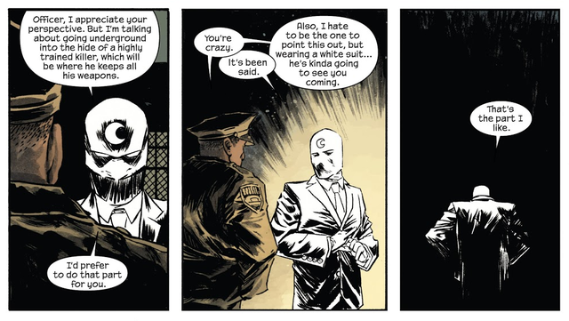

It is scary to tell people exactly what you want in a world full of conflict, because, well..."there 's only one principle of war and that's this. Hit the other fellow, as quick as you can, and as hard as you can, where it hurts him most, when he ain't lookin'".
Yet:  
How much sweeter would it be if he is looking and can't do anything about it anyway?
So here it is. What I want. My mission- what I want to do as I am dying.
Humanity will find a new way to care for life and remember that it is bound to each other. A new way to love, want, and desire born from all that came before. I am here to help this way take root.
For this, I will need to help make many more ways to get food, water, energy, as well as ways to spread those things- which includes ways to fight and move together.